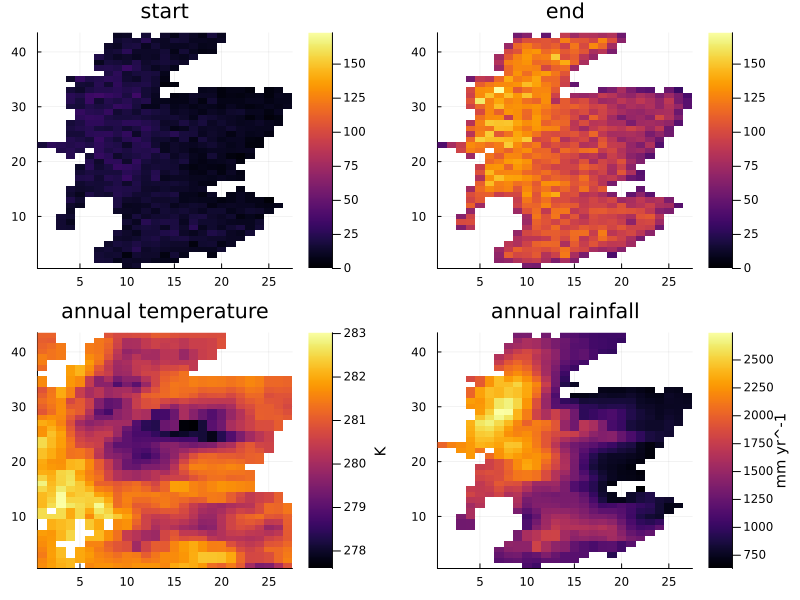
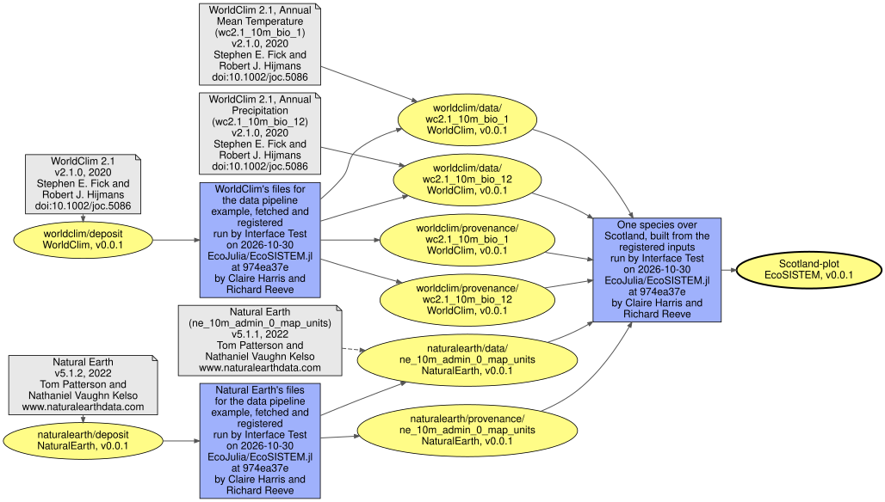

Data pipeline
The FAIR Data Pipeline records where every input of a run came from and what the run made of it, in a registry that can be pushed to the online data registry. EcoSISTEM takes part through DataPipeline.jl, a weak dependency: with it loaded, a spec given a EcoSISTEM.Track as its track keyword has its files go through a pipeline run.
Two runs, the same specs
A fetch run fetches the files its specs read and registers each one with its source, its authors and its licence, from the catalogue; a model run then builds the same specs, and every file is read from the pipeline's store rather than fetched. Which a run is depends on the function called, never on what is there: fetchfiles on a tracked spec is the fetch run's, and building from one only reads.
using EcoSISTEM, DataPipeline
using EcoSISTEM: Track
temperature(handle) = SourceSpec(WorldClim{BioClim}, :bio1,
track = Track(handle, "worldclim"))A track names the run's handle, from DataPipeline.initialise(), and a root: each file is the data product <root>/data/<stem>, the stem its name without its extension, and its provenance record <root>/provenance/<stem>. A handle of nothing tracks nothing, so one script runs with the pipeline or without it:
launched = haskey(ENV, "FDP_CONFIG_DIR") # started by `fair run`
if launched
nothing_to_fetch = DataPipeline.rehearse() do handle
return isempty(EcoSISTEM.missingfiles(inputs(handle)))
end
nothing_to_fetch && exit()
end
handle = launched ? DataPipeline.initialise() : nothing
EcoSISTEM.fetchfiles(inputs(handle))
isnothing(handle) || DataPipeline.finalise(handle)EcoSISTEM.missingfiles says what is still to do, and why, without fetching: a fetch run with nothing to do stops in the rehearsal, before a code run exists.
What a file is registered as
The registry derives every output of a run from every input of it, so a fetch run registers one source's files. Its one input is the source's deposit, registered with no file and named by the catalogue's identifier in the source's namespace (datasets.csv's Namespace), so every user registers one source's files alike. Its outputs, each derived from that deposit alone, are:
- every file, whether downloaded as its provider publishes it, made by the Climate Data Store to a request (as an ERA5 extract is), or given to a spec by you (
file,filesordirectory). A download is the cited item's own file (primary) where the identifier names the data - a CHELSA deposit, Natural Earth's web page - and not where it names a paper describing the data, as WorldClim's does; an extract or a file of yours never is. A netCDF extract'shistoryattribute, which records when and where the CDS converted it, is replaced by a note of the same length, so fetches of the same data are identical. A file of yours is of the catalogue's release unless the track says otherwise:Track(handle, "cru", release_version = "4.8", release_date = "2024-05"); - every file's provenance record,
<file>.provenance.toml.
A fetch run asked to register a second source's files refuses. A provider can change a file without a new release: a file whose bytes differ from those already registered under its release is registered under that release with build metadata, 2.1.0+20230104, the day its provider changed it, so both stay traceable.
The example
examples/pipeline/ is a model run over Scotland and the fetch runs it reads from, with an environment of its own (examples/pipeline/Project.toml), since DataPipeline is a weak dependency: inputs.jl names the specs, fetch.jl fetches one source's files, with a config for each source (fetch-worldclim.yaml, fetch-naturalearth.yaml, fetch-era5.yaml), and model.jl and model.yaml are the model run, one species built from WorldClim's annual temperature and rainfall within Natural Earth's outline of Scotland. Its environment is instantiated once, with julia --project=examples/pipeline -e 'using Pkg; Pkg.instantiate()'; then, in Julia started with julia --project=examples/pipeline from the root of a clone of this repository:
using DataPipeline
DataPipeline.install_cli!() # where there is no `fair` installed
fair"registry install" # the first time: the local registry
fair"init" # the first time in this clone: it asks who you are, and more
fair"run examples/pipeline/fetch-worldclim.yaml" # fetches and registers WorldClim's files
fair"run examples/pipeline/fetch-naturalearth.yaml"
fair"run examples/pipeline/fetch-worldclim.yaml" # stops at once: everything is registered
fair"pull --local examples/pipeline/model.yaml"
fair"run examples/pipeline/model.yaml" # reads them from the store, registers the figurefair"..." runs the pipeline's command-line tool with its arguments as on the command line, so from a shell, with fair-cli installed from PyPI, the same commands are fair registry install, fair init and so on. pull takes --local because it would otherwise look for what the config's patterns match in a remote registry, where none of this is; a run matches them in the local one. A run records the commit it ran from, and refuses unless the clone's git remote has that commit and nothing is uncommitted; --dirty lets it run regardless, recorded as made from changed code.
fetch-era5.yaml fetches and registers a month of ERA5 over Scotland the same way, an extract the Climate Data Store makes to a request; fetching it needs a key in ~/.cdsapirc, and the model does not read it.
The rest of this page runs those steps when this documentation is built with the environment variable ECOSISTEM_DOCS_RUN_PIPELINE set to true, as the package's own documentation build does, against a registry that starts empty; built without it, the blocks only say so.
Fetching each source
A fetch config takes its source's namespace for the run's inputs and outputs, registers it, and writes the files and their records:
using EcoSISTEM
example = joinpath(pkgdir(EcoSISTEM), "examples", "pipeline")
print(read(joinpath(example, "fetch-worldclim.yaml"), String))run_metadata:
description: WorldClim's files for the data pipeline example, fetched and registered
default_input_namespace: WorldClim
default_output_namespace: WorldClim
script: |
julia --project=examples/pipeline examples/pipeline/fetch.jl worldclim
# The source's namespace, as the catalogue names it (`data/catalogue/datasets.csv`), which is the
# run's own: its one input is the source's deposit, and its outputs the files and their records.
register:
- namespace: WorldClim
full_name: WorldClim
website: https://www.worldclim.org/
write:
- data_product: worldclim/data/*
description: A WorldClim file
file_type: tif
- data_product: worldclim/provenance/*
description: EcoSISTEM's provenance record of a file under worldclim
file_type: tomlIts run fetches WorldClim's two layers where they are not held, and registers each file and its record as derived from WorldClim's deposit. The first fetch run in a registry also registers the catalogue's authors, so that each citation's authors are found by their identifiers; the rehearsal the run starts with says which it would.
using DataPipeline
run_example = get(ENV, "ECOSISTEM_DOCS_RUN_PIPELINE", "") == "true"
run_example || println("Not run: ECOSISTEM_DOCS_RUN_PIPELINE is not set.")
# `fair` runs from the root of the repository, which the configs' paths start from
run_example && cd(pkgdir(EcoSISTEM)) do
fair"run examples/pipeline/fetch-worldclim.yaml"
endPreparing the job and running its script, please wait
checking the run prepared in /home/runner/work/EcoSISTEM.jl/EcoSISTEM.jl/.fair/data_store/jobs/2026-10-30_11_38_58_829987 by a rehearsal, which registers nothing
would register the author Chantal Hari (https://orcid.org/0000-0003-2507-8747)
would register the author Dirk Nikolaus Karger (https://orcid.org/0000-0001-7770-6229)
would register the author Ed Hawkins (https://orcid.org/0000-0001-9477-3677)
would register the author Eric de Boisseson (https://orcid.org/0000-0002-0330-4021)
would register the author G.W. Kent Moore (https://orcid.org/0000-0002-3986-5605)
would register the author Gilbert P. Compo (https://orcid.org/0000-0001-5199-9633)
would register the author Holger Kreft (https://orcid.org/0000-0003-4471-8236)
would register the author Ian Harris (https://orcid.org/0000-0003-2037-9284)
would register the author Jürg Luterbacher (https://orcid.org/0000-0002-8569-0973)
would register the author Laura C. Slivinski (https://orcid.org/0000-0002-3531-3889)
would register the author Leopold Haimberger (https://orcid.org/0000-0002-0379-6353)
would register the author Linden Ashcroft (https://orcid.org/0000-0003-3898-6648)
would register the author Loïc Pellissier (https://orcid.org/0000-0002-2289-8259)
would register the author Magdalena Balmaseda (https://orcid.org/0000-0002-9611-8788)
would register the author Niklaus E. Zimmermann (https://orcid.org/0000-0003-3099-9604)
would register the author Patrick Laloyaux (https://orcid.org/0000-0003-2808-0463)
would register the author Paul Poli (https://orcid.org/0000-0002-8392-6524)
would register the author Philipp Brun (https://orcid.org/0000-0002-2750-9793)
would register the author Przemysław Wyszyński (https://orcid.org/0000-0003-3470-7349)
would register the author Rajmund Przybylak (https://orcid.org/0000-0003-4101-6116)
would register the author Roberto Buizza (https://orcid.org/0000-0002-3754-2271)
would register the author Stephen E. Fick (https://orcid.org/0000-0002-3548-6966)
would register the author Timothy J. Osborn (https://orcid.org/0000-0001-8425-6799)
processing config file: /home/runner/work/EcoSISTEM.jl/EcoSISTEM.jl/.fair/data_store/jobs/2026-10-30_11_38_58_829987/config.yaml
pipeline initialised.
[ Info: Starting download for https://geodata.ucdavis.edu/climate/worldclim/2_1/base/wc2.1_10m_bio.zip
┌ Info: Downloading
│ source = "https://geodata.ucdavis.edu/climate/worldclim/2_1/base/wc2.1_10m_bio.zip"
│ dest = "/home/runner/.julia/scratchspaces/ed2dc23b-ada4-5fdb-a26f-56368a14ad8f/assets/RasterDataSources/WorldClim/BioClim/zips/wc2.1_10m_bio.zip"
│ progress = 1.0
│ time_taken = "0.81 s"
│ time_remaining = "0.0 s"
│ average_speed = "58.715 MiB/s"
│ downloaded = "47.559 MiB"
│ remaining = "0 bytes"
└ total = "47.559 MiB"
finished - code run locally registered as: http://127.0.0.1:8000/api/code_run/1/Natural Earth's config is the same in its own namespace, and its run registers the zip of outlines that Scotland's is read from:
run_example && cd(pkgdir(EcoSISTEM)) do
fair"run examples/pipeline/fetch-naturalearth.yaml"
endPreparing the job and running its script, please wait
checking the run prepared in /home/runner/work/EcoSISTEM.jl/EcoSISTEM.jl/.fair/data_store/jobs/2026-10-30_11_40_12_862754 by a rehearsal, which registers nothing
processing config file: /home/runner/work/EcoSISTEM.jl/EcoSISTEM.jl/.fair/data_store/jobs/2026-10-30_11_40_12_862754/config.yaml
pipeline initialised.
finished - code run locally registered as: http://127.0.0.1:8000/api/code_run/2/Run again, WorldClim's fetch run finds every file registered as it would register it now, and stops in its rehearsal, before a code run exists, registering nothing:
run_example && cd(pkgdir(EcoSISTEM)) do
fair"run examples/pipeline/fetch-worldclim.yaml"
endPreparing the job and running its script, please wait
checking the run prepared in /home/runner/work/EcoSISTEM.jl/EcoSISTEM.jl/.fair/data_store/jobs/2026-10-30_11_41_14_011269 by a rehearsal, which registers nothingThe model run
The model config reads each source's files and their records in its namespace, and writes the figure in EcoSISTEM's:
print(read(joinpath(example, "model.yaml"), String))run_metadata:
description: One species over Scotland, built from the registered inputs
default_input_namespace: EcoSISTEM
default_output_namespace: EcoSISTEM
# `JULIA_NUM_THREADS` where it is set, else every core: `fair` runs this with `sh`, which expands it
# (a Windows `batch` shell would pass it through as written).
script: |
julia --threads=${JULIA_NUM_THREADS:-auto} --project=examples/pipeline examples/pipeline/model.jl
register:
- namespace: EcoSISTEM
full_name: EcoSISTEM
website: https://github.com/EcoJulia/EcoSISTEM.jl
# Each source's files and their records, in its namespace: a `*` matches one segment of a name, so
# `<root>/*/*` takes `<root>/data/...` and `<root>/provenance/...` and leaves the deposit, which has
# no file.
read:
- data_product: worldclim/*/*
use:
namespace: WorldClim
- data_product: naturalearth/*/*
use:
namespace: NaturalEarth
write:
- data_product: Scotland-plot
description: Start and end abundances over Scotland, with the annual temperature and rainfall
file_type: pngfair pull finds what the config reads in the registry, and fair run runs model.jl, which builds the habitat from the files in the store, simulates five years and registers the figure:
run_example && cd(pkgdir(EcoSISTEM)) do
fair"pull --local examples/pipeline/model.yaml"
fair"run examples/pipeline/model.yaml"
endPulling, please wait
There are no items in the [read] block to pull from registry: 'origin'.
Preparing the job and running its script, please wait
processing config file: /home/runner/work/EcoSISTEM.jl/EcoSISTEM.jl/.fair/data_store/jobs/2026-10-30_11_42_07_579814/config.yaml
pipeline initialised.
data product found: naturalearth/data/ne_10m_admin_0_map_units
data product found: naturalearth/provenance/ne_10m_admin_0_map_units
data product found: worldclim/data/wc2.1_10m_bio_1
data product found: worldclim/provenance/wc2.1_10m_bio_1
data product found: worldclim/data/wc2.1_10m_bio_12
data product found: worldclim/provenance/wc2.1_10m_bio_12
[ Info: layer `:regime` is resampled onto the study grid, because it is in a different CRS.
[ Info: layer `:supply` is resampled onto the study grid, because it is in a different CRS.
┌ Warning: no layer is in the target grid's CRS, so no layer can be kept exactly - every one of them will be resampled. Choosing a `crs` that matches one of them would avoid that.
└ @ EcoSISTEM ~/work/EcoSISTEM.jl/EcoSISTEM.jl/src/StudyAreaReport.jl:240
Scotland on a 43 x 27 grid of 10 km cells (696 active): total abundance 10000 -> 69201.
finished - code run locally registered as: http://127.0.0.1:8000/api/code_run/3/Where the figure came from
DataPipeline's provenance traces a data product back through the runs that made it to what each of them read, and each one's source:
trace = run_example ? DataPipeline.provenance("EcoSISTEM:Scotland-plot") : nothingProvenance of EcoSISTEM:Scotland-plot@v0.0.1 sha1 3043e759
<- run 9a7b8b94 on 2026-10-30 11:42 UTC, github.com/EcoJulia/EcoSISTEM.jl at 974ea37e
used WorldClim:worldclim/data/wc2.1_10m_bio_1@v0.0.1 sha1 f6426c76 from https://doi.org/10.1002/joc.5086 (supplement)
<- run fae77e58 on 2026-10-30 11:39 UTC, github.com/EcoJulia/EcoSISTEM.jl at 974ea37e
used WorldClim:worldclim/deposit@v0.0.1 no file from https://doi.org/10.1002/joc.5086 (supplement)
used WorldClim:worldclim/data/wc2.1_10m_bio_12@v0.0.1 sha1 fd39b387 from https://doi.org/10.1002/joc.5086 (supplement)
<- run fae77e58 on 2026-10-30 11:39 UTC, github.com/EcoJulia/EcoSISTEM.jl at 974ea37e
used WorldClim:worldclim/deposit@v0.0.1 (above)
used WorldClim:worldclim/provenance/wc2.1_10m_bio_1@v0.0.1 sha1 246da0b4
<- run fae77e58 on 2026-10-30 11:39 UTC, github.com/EcoJulia/EcoSISTEM.jl at 974ea37e
used WorldClim:worldclim/deposit@v0.0.1 (above)
used WorldClim:worldclim/provenance/wc2.1_10m_bio_12@v0.0.1 sha1 25a7ea5f
<- run fae77e58 on 2026-10-30 11:39 UTC, github.com/EcoJulia/EcoSISTEM.jl at 974ea37e
used WorldClim:worldclim/deposit@v0.0.1 (above)
used NaturalEarth:naturalearth/data/ne_10m_admin_0_map_units@v0.0.1 sha1 286d07d8 from https://www.naturalearthdata.com/ (primary)
<- run 6dd24aaa on 2026-10-30 11:41 UTC, github.com/EcoJulia/EcoSISTEM.jl at 974ea37e
used NaturalEarth:naturalearth/deposit@v0.0.1 no file from https://www.naturalearthdata.com/ (primary)
used NaturalEarth:naturalearth/provenance/ne_10m_admin_0_map_units@v0.0.1 sha1 a6d17a8d
<- run 6dd24aaa on 2026-10-30 11:41 UTC, github.com/EcoJulia/EcoSISTEM.jl at 974ea37e
used NaturalEarth:naturalearth/deposit@v0.0.1 (above)
The figure, read back from the store where the registry says it is: the abundance at the start and after five years, beside the annual temperature and rainfall the habitat was built from.
run_example && include(joinpath(pkgdir(EcoSISTEM), "docs", "pipeline.jl"))
run_example ? registeredimage(trace.products[only(trace.roots)]) : nothing
The same provenance as a graph, drawn by docs/pipeline.jl from the registry's own record two code runs back, which reaches the providers: grey for each item a provider's data is cited by, with its authors; yellow for each data product; blue for each code run, with the code it ran and that code's authors. A dashed arrow joins a cited item to a file that is the item itself, as Natural Earth's zip is; WorldClim's files are cited by the paper describing their data.
run_example ? provenancegraph(trace, depth = 2) : nothing